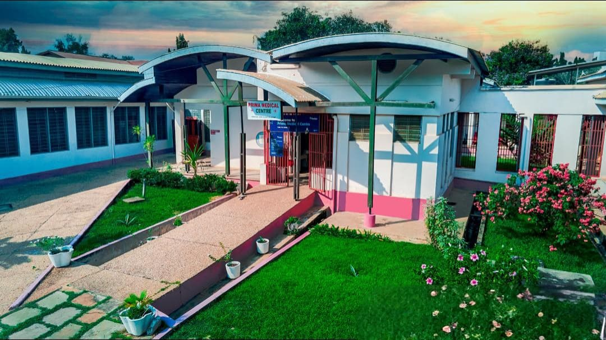
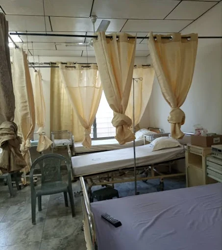
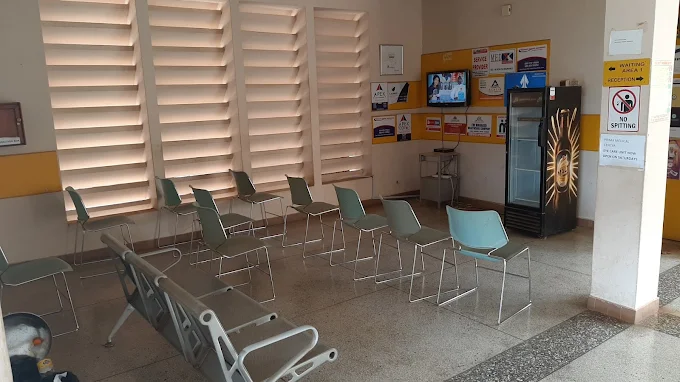
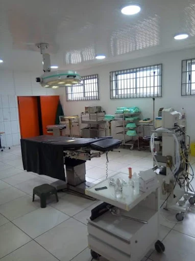

General Practice
Routine checkups, chronic disease management, immunizations, and preventive care.
At Prima Medical Centre, we provide a wide range of healthcare services for all ages, supported by modern facilities and a team of experienced professionals.
Routine checkups, chronic disease management, immunizations, and preventive care.
On-site laboratory and imaging services including X-ray, ultrasound, and blood tests.
Consultations with internal medicine, pediatrics, gynecology, and other specialists.
Remote consultations for non-emergency care to ensure convenience and safety.



